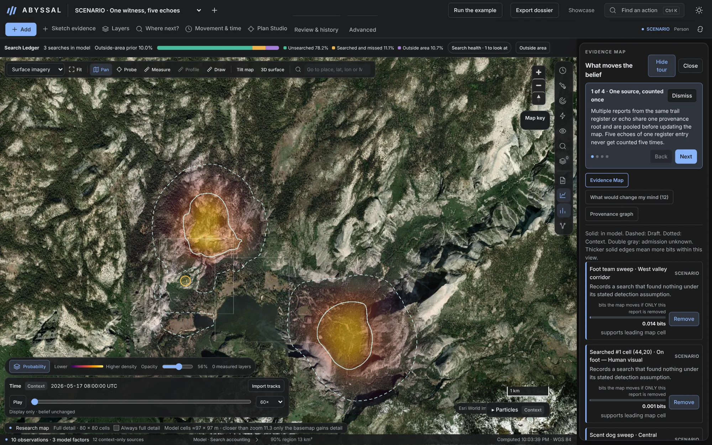
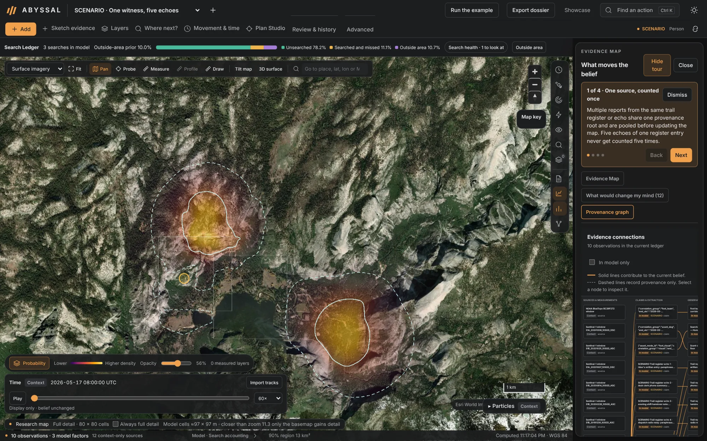
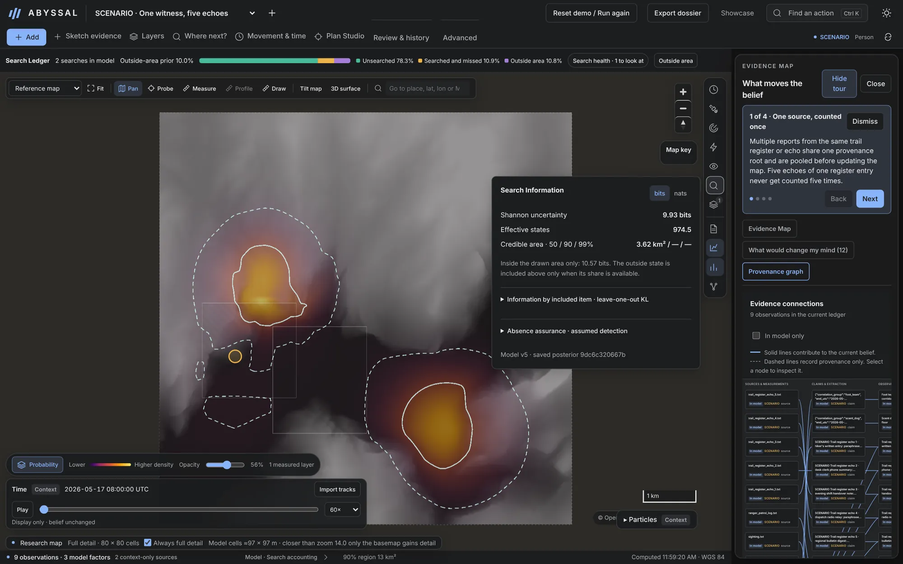
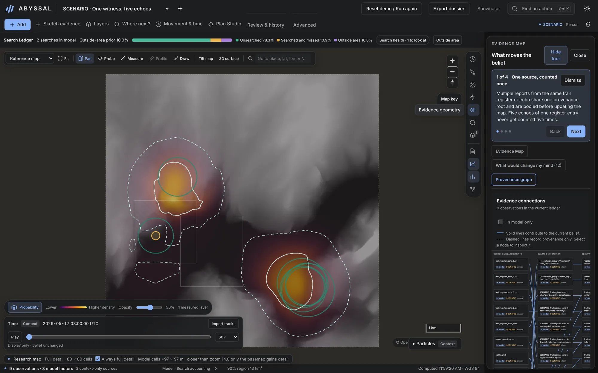
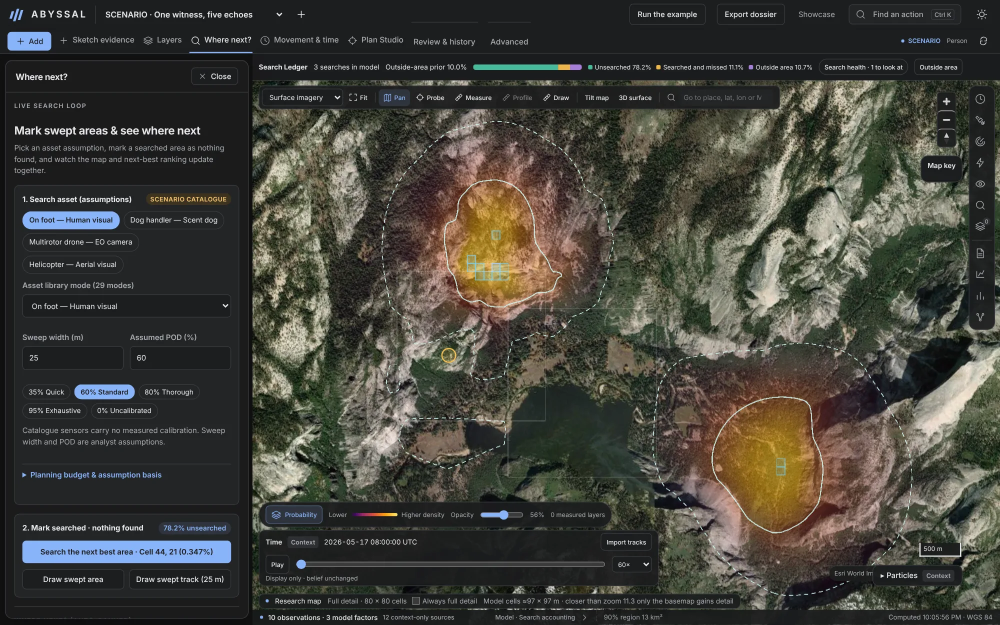
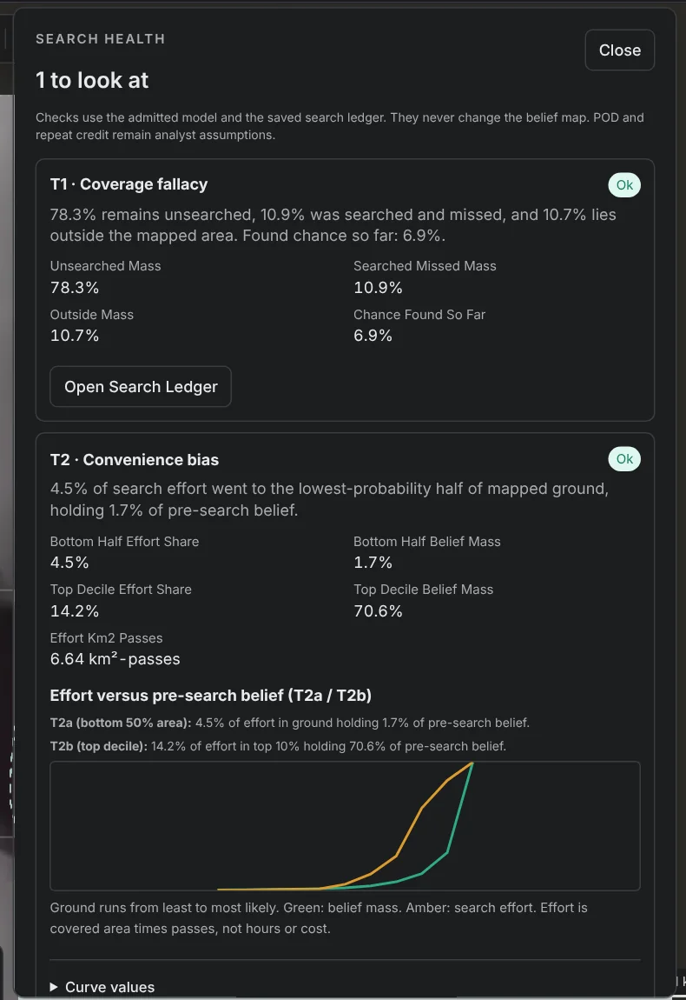
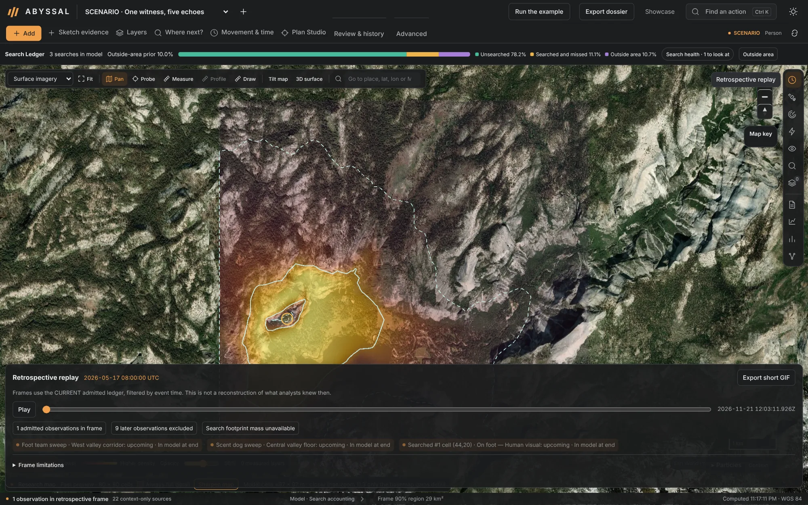
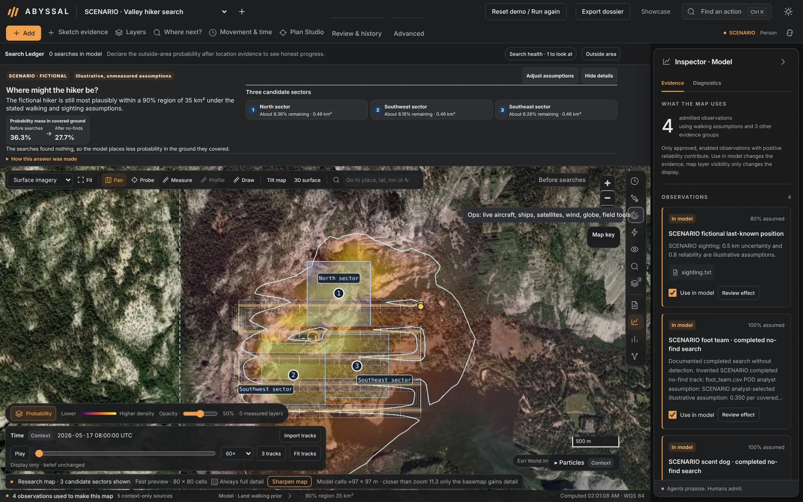

Something is lost. A hiker who did not come back down the valley, a trawler whose transponder went quiet, an aircraft that vanished over open ocean, a merchant ship that sank off Land's End in 1641 with a fortune in silver. Somebody has to decide where to look first, and then, after the first search finds nothing, where to look next.
That decision is almost always made with a whiteboard, a paper chart, a spreadsheet and a lot of experienced intuition. The intuition is often excellent. The arithmetic underneath it is often wrong in ways that are predictable, quantifiable and expensive. ABYSSAL is the tool I have been building to fix the arithmetic without taking the decision away from the people who have the intuition.
This first part of the series is a tour. No equations (those come in Part 3). Just the software, what it shows you, and why it is designed the way it is. Every screenshot is the real application running locally on fictional or historical cases.
ABYSSAL keeps an honest probability map of where a lost thing might be, updates it every time someone searches and finds nothing, tells you which piece of evidence moved the map and by how much, suggests where to look next, and records who decided to trust each input.
01The first ten seconds
The landing page offers one primary action, Start a new search, and three demonstrations you can open with a single click. I rebuilt this page several times. Earlier versions listed every capability; strangers read the list, felt they had understood the product, and never opened it. Now the page does one thing: put a real map in front of you as fast as possible.

Click See the Evidence Map: one witness, five echoes. In about four seconds you are looking at a probability map over real elevation data from a mountain valley. The case is fictional and labelled SCENARIO everywhere it appears, which is the first rule of the system: invented data can never leak into, or be mistaken for, a real case.

Here is what you are looking at, from the outside in.
- The colour is belief, not fact. Brighter means more of the probability sits there. The colour ramp is called Ember: it runs from near-black through violet and magenta to orange and pale amber, its brightness rises strictly, and it contains no blue or green. That last property is deliberate. Blue and green are the colours of sea and land; a probability ramp that uses them makes low-probability water look identical to the ocean underneath it.
- The contours are credible regions. The solid line is the smallest area holding 50% of the belief; the dashed line holds 90%. On this case the 90% region is 13 km². That number, not the colour, is what a search coordinator plans against.
- The rectangles are searches that found nothing. A foot team swept the west valley corridor; a scent dog worked the valley floor. Neither found the hiker. Notice the map is darker inside them, but not black. A search that finds nothing is evidence, but weak evidence, because searches miss.
- The bar across the top is the Search Ledger. It splits the remaining belief into three honest parts: unsearched (78.3%), searched and missed (10.9%), and outside the mapped area (10.8%). That third segment is the one almost every search tool leaves out.
A team reports "we have covered 80% of the area". Most people hear "we are 80% done". But if the search method spots the target seven times in ten when it is actually there, and the planners were only 90% sure the target was inside the drawn area at all, then after an empty search the largest single share of the remaining belief, 43.5%, sits in ground already marked "done", and a fifth of it now sits outside the line. The Search Ledger bar makes that visible at a glance. Part 3 derives it and lets you play with it.
02Where the belief comes from
The left drawer is the archive. Every source you bring in, a PDF, a GPX track, a witness statement typed into a text file, a scanned 1641 pamphlet, is kept as the original file with a SHA-256 hash, the time it was retrieved, where from and under what licence. A source on its own changes nothing. It has to be turned into an observation (a point, a bearing, a range ring, an area, a completed search) and that observation has to be admitted by a person before the map moves.
This is the most important design decision in ABYSSAL, so it is worth saying plainly: importing, downloading, extracting, detecting, or an AI agent finding something never changes the map. Agents propose. Deterministic code acquires. Humans admit. Every admitted item records who admitted it and when, and can be switched off again to see what the map would look like without it.


The Sketch evidence tool is where most people first feel the product click. A witness on a ridge says the smoke was "north-east, maybe two and a half kilometres away". You pick Range + bearing, click the observer, drag towards the smoke, and type the uncertainty: 53° ± 5°, 2.6 km ± 200 m. You choose how much you trust it (Doubtful, Plausible, Trusted), and the panel tells you, before anything is saved, that including it would move the map by 3.66 bits. Then you decide: include it, or save it as a draft for someone else to review.
Tracks come in the same way. GPX from a hiker's watch, KML from Google Earth, GeoJSON, IGC glider flights, raw GPS NMEA sentences, AIS ship reports, OpenSky ADS-B aircraft data and plain CSV are all parsed into whole tracks on the map, and any fix on a track can be turned into a pre-filled draft observation.
03Why did the map move? The Evidence Map
The single question a sceptical expert asks of any probability map is: why does it say that? Most systems cannot answer except by pointing at the code. ABYSSAL answers in a unit everyone can compare: bits.

Each row is a counterfactual: remove this one observation, recompute the whole map, and measure the difference. The foot-team sweep is worth 0.014 bits; the dog sweep 0.009 bits. Further down is the interesting row: five trail-register reports that all turn out to be copies of a single logbook entry. ABYSSAL groups them under one provenance root and counts them once. Remove any single echo and almost nothing changes; remove the whole source and the map shifts substantially. That is the lesson the demo is named after, and it is the subject of Part 4.

Two other panels answer neighbouring questions. Search Information gives the map's overall uncertainty: 9.93 bits of Shannon entropy here, equivalent to about 975 equally likely cells, and the 50/90/99% credible areas. Evidence geometry draws each admitted observation's footprint on the map, so you can see the range ring and bearing wedge that a clue actually contributes.


04The search loop: mark, update, re-rank
The heart of the product is a loop that a search coordinator runs all day: send a team somewhere, get the result, update the picture, decide what next. ABYSSAL turns that into three clicks.

Three things in that screenshot are worth slowing down for.
First, the 0% "Uncalibrated" preset. If you do not know how good a sensor is, the honest probability of detection to assume is not 50%; it is "I don't know", and an unknown sensor must not be allowed to make an empty search count against a place. ABYSSAL enforces this: a search with an uncalibrated sensor is recorded, drawn and kept, but it cannot lower belief anywhere. You would be amazed how much bad search planning comes from a confident-sounding number nobody measured.
Second, every update is undoable and exact. The undo restores the posterior to the bit, and the test suite checks that it does for searches, echo reports and area statements.
Third, the map can be stale. If you change something while a slow panel is computing, the panel knows its numbers were computed for a different map (it carries the posterior's SHA-256) and says so rather than showing you something out of date.
Plan Studio: many assets, one plan
Where-next ranks cells for one asset. Real searches have a dog team, two foot teams and a drone, each with its own speed, sweep width, endurance and detection probability. Plan Studio allocates all of them at once, draws each asset's track, and exports tasking sheets as CSV, GPX (load straight into a handheld) or PDF.

Plan Studio also carries a money layer: the value of a find, the cost per hour of each asset and a fixed mobilisation cost turn bits into expected value, return on investment and a break-even find value; and a search-to-exhaustion curve shows the point where one more pass costs more than it is expected to return. That is the subject of Part 5.
Search Health: seven traps, checked automatically
Experienced search managers know the classic failures by name. ABYSSAL checks for them continuously and says so in plain sentences, never hiding a number and never blocking a decision.

The full list: T1 the coverage fallacy; T2 convenience bias (searching where it is easy rather than where it is likely); T3 cleared-ground complacency (a moving subject can walk back into "cleared" ground); T4 single-story anchoring (most of the weight resting on one source); T5 the fragile clue (remove one sighting and the top area changes); T6 repeating a failing method (a third dog pass over the same ground buys almost nothing; a different sensor might buy a lot); and T7 sunk-cost continuation. Four of the seven are live today; three wait on data the app does not yet collect, and they say needs rather than pretending to pass.
05Time: people walk, things drift
A lost person does not stay put. Movement & time projects the belief forward under explicit movement assumptions: for land, a walking prior built from least-cost distance over real terrain (slope, trails, water); for sea, a current-plus-leeway drift.

There is also a retrospective replay, which recomputes the map as it stood at every saved revision of the case, a "fog-of-war" view that shows what the searchers knew at each moment (and can be exported as a video), and a shift handover report that compares two moments: what was searched, what was admitted, and how the numbers moved. Handovers between search shifts are where institutional memory leaks; a deterministic, hash-stamped handover stops the leak.

06Three real cases
ABYSSAL ships with three historical reference cases. They are not the product; they are stress tests, because each is hard in a different way.


The AF447 backtest is a good example of the house style. The headline numbers flatter the model: the Phase 1 prior ranks the wreck cell tenth out of 6,400. The write-up immediately tells you not to cite that, because the Phase 1 prior is a Gaussian centred on the last known position and the wreck happened to lie 0.27 standard deviations from it, so the rank follows almost mechanically. What the negative-search accounting actually added over Phase 1 was between 0.08 and 0.28 bits. Small. Reported as small.
07The fictional land search, end to end
The second landing-page demo, Try the fictional land search, runs a complete lost-hiker case on real Yosemite Valley elevation: a last-known position, a terrain-aware walking prior, three completed searches with stated detection probabilities, and an answer card that says where the hiker most plausibly is and how much the searches changed that.

08Beyond the single target
The last third of the product, built over the past fortnight, pushes outwards in two directions.
The Ops console is a live operating picture: aircraft (ADS-B) with emergency-squawk alerts, ships (AIS) with dark-vessel flags, satellites propagated with SGP4 and their sensor swaths, wind and current particles, day and night, rain radar, earthquakes, a 3D globe, terrain, and a set of field tools, including leeway drift Monte Carlo, bearings-only fixes, shadow chronolocation, IAMSAR search patterns and photo EXIF geolocation. Part 7 tours it.
The Signal Lab is the second engine: physics-screened detectors that turn raw measurements into calibrated detections. It finds ships in satellite radar images, reads their wakes to recover heading, speed and true position, matches them against AIS and flags vessels with no transponder; it localises underwater explosions and implosions from hydrophone arrival times; it finds rings (debris fields, crater rims, slicks). Everything it finds is a contact, not evidence, until its detection rates are measured. Part 6 is about the physics.

09What it is not
I want to be as clear about this as about the features. ABYSSAL is a research prototype. Its mathematics is covered by roughly 2,500 Python tests, including oracle tests against known answers and frozen posterior hashes, plus 330 frontend unit tests and 118 browser journeys that assert exact numbers on screen. It has not yet been validated against real search outcomes beyond one historical backtest, and every detection probability in it is labelled as an analyst assumption unless it has been measured. It provides decision support. It never says "the target is here", and it never issues a clearance certificate.